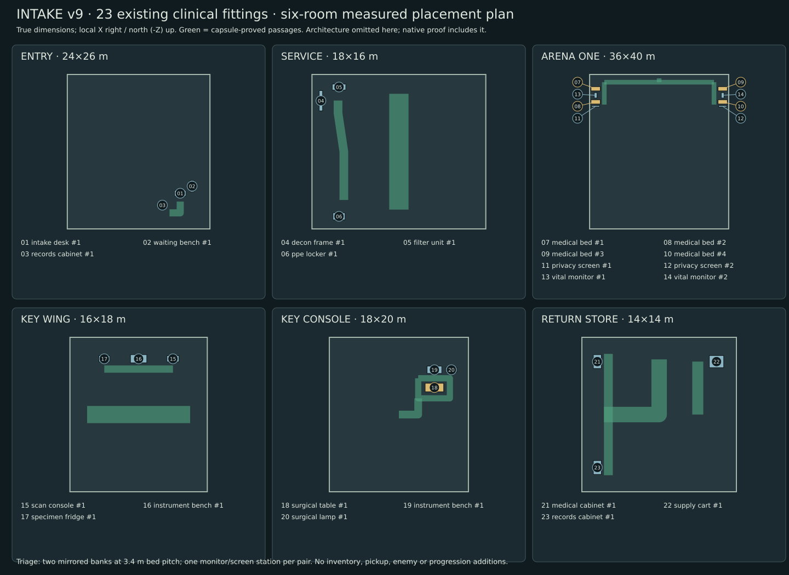
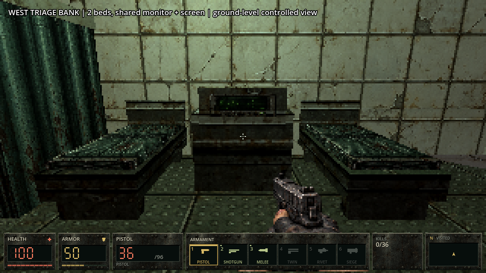
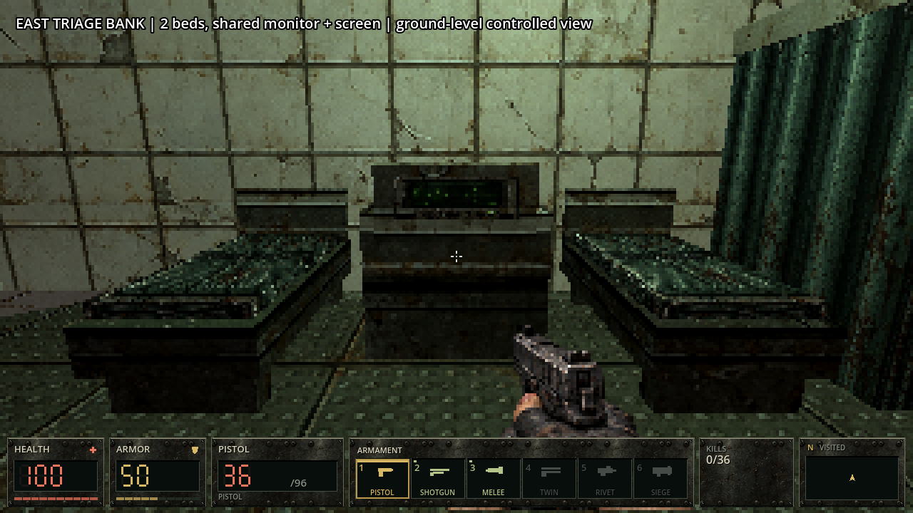
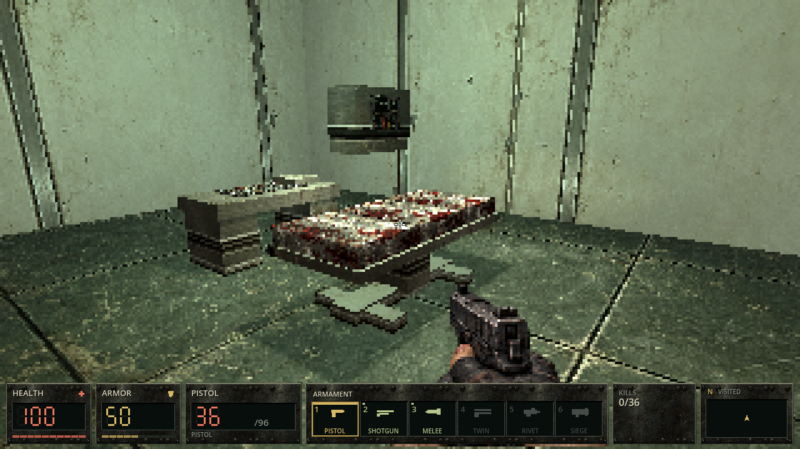
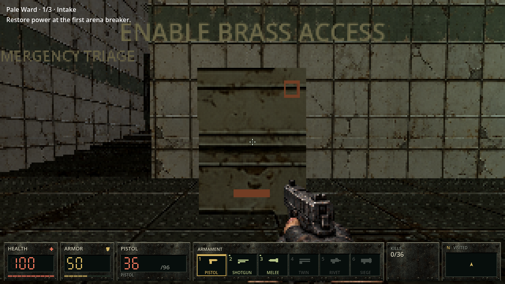
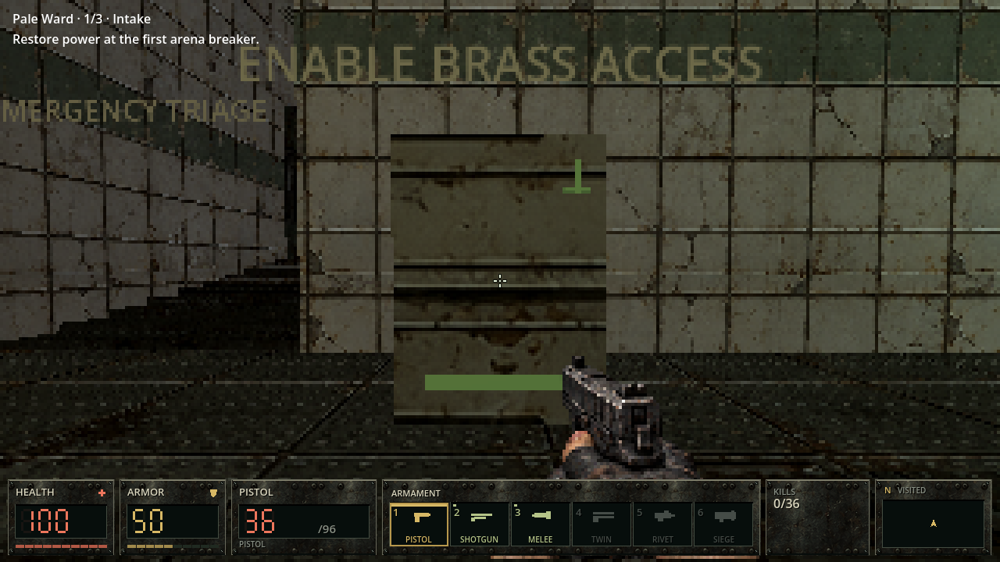
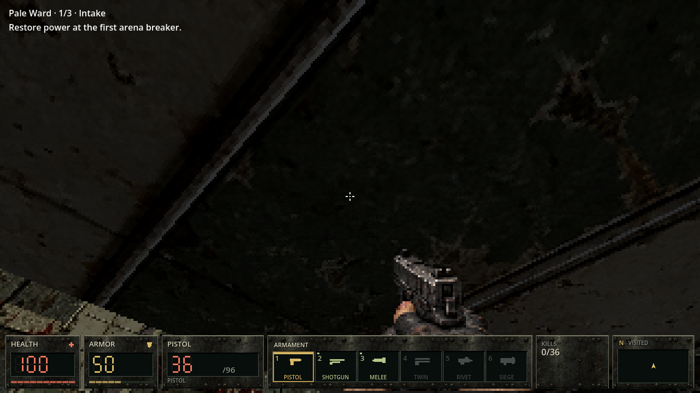
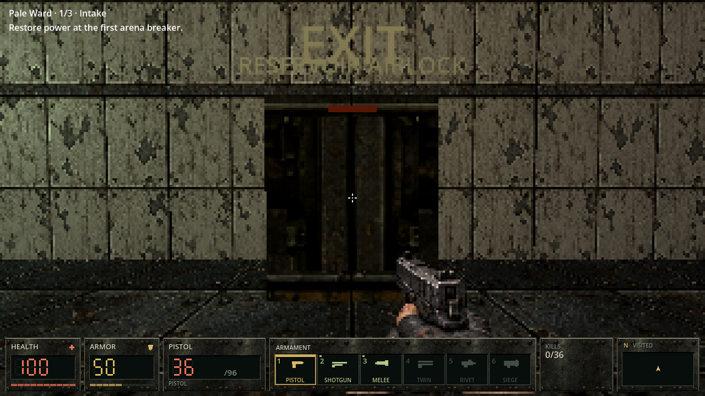

EYESORE · THE PALE WARD · CLINICAL MOVEMENT v9
Clinical layout, complete surfaces and grounded movement
Ctrl hold crouch · Shift hold sprint · View bob slider in pause settings, including zero.
Crouch changes the physical capsule; standing waits for clear space. Sprint is grounded, 1.35× speed, permits firing, and yields to crouch. Aim remains tied to the actual camera.
The first six Intake rooms use explicit positions for all23 existing furnishing instances. Four triage beds form two paired banks with shared monitoring stations and nurse/cross aisles; the operating theatre has a distinct table. Inventory counts and other eight campaign scenes are preserved. Equipment, platform, button and exit surfaces use the existing gritty native texture atlases.
Assets, method and source links · Gunshot listening candidates · Previous presentation pass
Measured object plan

Authored23-object clinical plan, before creation; measured lanes receive separate physical capsule checks. This is a plan diagram.Native game inspection
Actual Main / Compatibility screenshots. Cameras and flags are controlled for inspection; actors frozen. Bank views are at player eye height; platform underside uses an inspection camera. These are native rendered fixtures, separate from ordinary route acquisition and human acceptance.

West paired-bed bank, shared monitor and screen.
East paired-bed bank, mirrored toward the nurse aisle.
Separate segmented operating table, central pedestal and T-base.
Control inactive: recessed textured body and off glyph.
Control active: real stage flag drives glyph and stripe.
Existing platform underside with complete textured faces.
Exit locked.Exit ready after its real requirements are satisfied.Sound review
The separate packet compares current gunshots, new dry library excerpts, natural candidates and body-controlled candidates at matched technical levels. It includes repeated shots at real weapon cadence. No replacement gunshot, impact, voice or music file enters the playable v9 build yet; listening selection remains open.
Remaining work
Further room density, physical lighting/flicker, new Ward staff enemies, authored item ambushes and thicker gore remain on the production board. This is a bounded movement/layout/surface pass; full original-concept reproduction and human play acceptance remain open.